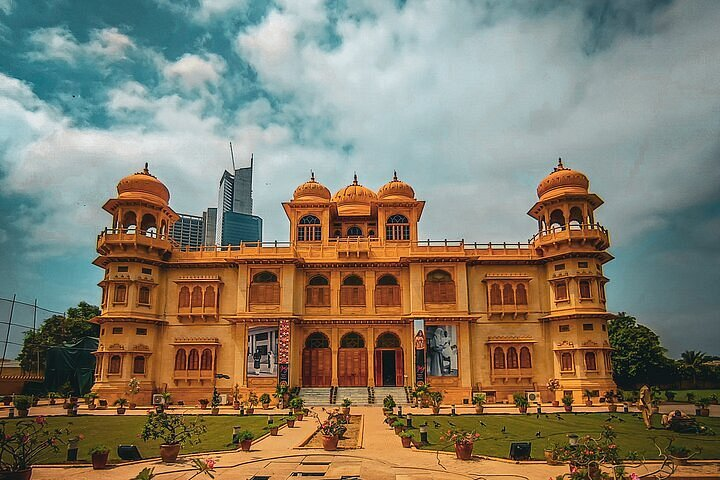

<div class="portfolio-single-load clearfix">
    <div class="custom-full-width-box">
        <div class="custom-container">
            <div class="custom-row align-items-center">
                <div class="custom-image-column">
                    
                </div>
                <div class="custom-text-column">
                    <h2 class="custom-heading">Mohatta Palace</h2>
                    <p class="custom-paragraph">
                        Nestled in the heart of Karachi, Mohatta Palace is a testament to the city's colonial past. Built in the early 20th century by Shivratan Chandraratan Mohatta, a wealthy businessman, the palace showcases an exquisite blend of Rajput, Mughal, and British architectural styles. Today, it serves as a museum, housing a diverse collection of art, artifacts, and cultural exhibits, providing a glimpse into Pakistan's rich heritage.

                    </p>
                </div>
            </div>
        </div>
    </div><!-- .custom-full-width-box end -->

</div><!-- end single-project -->
